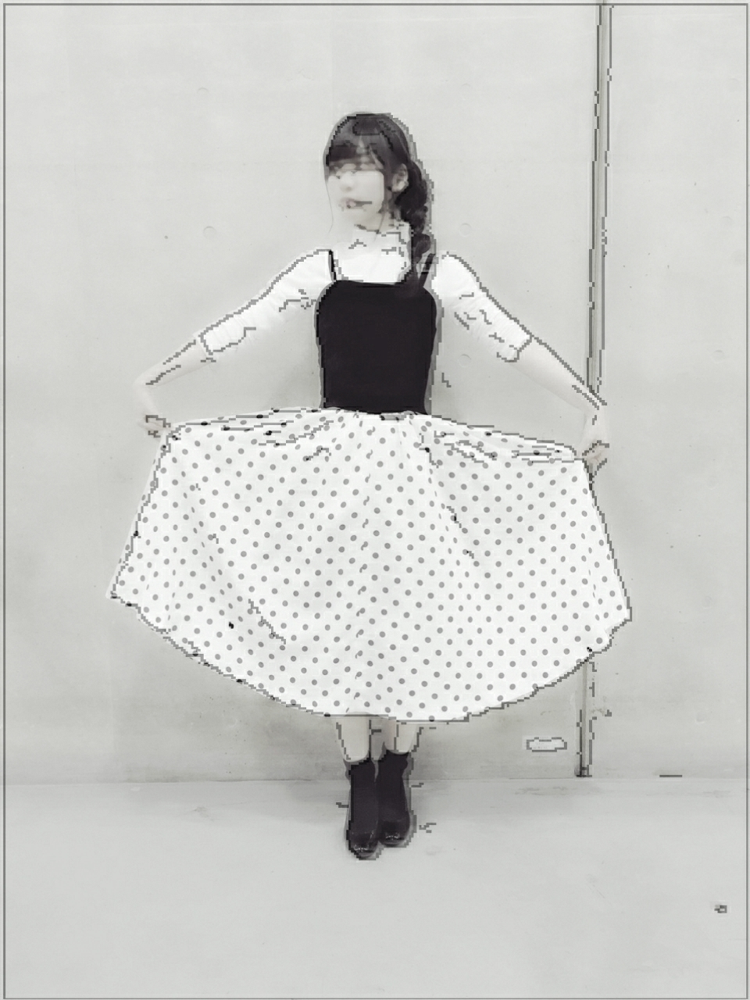
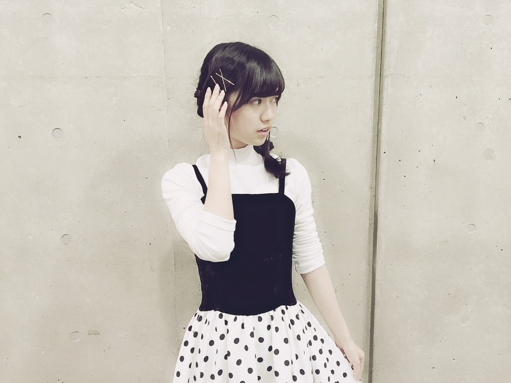
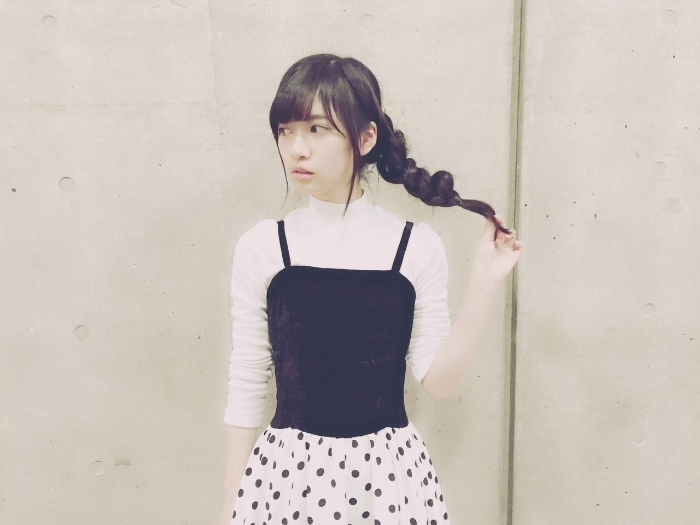
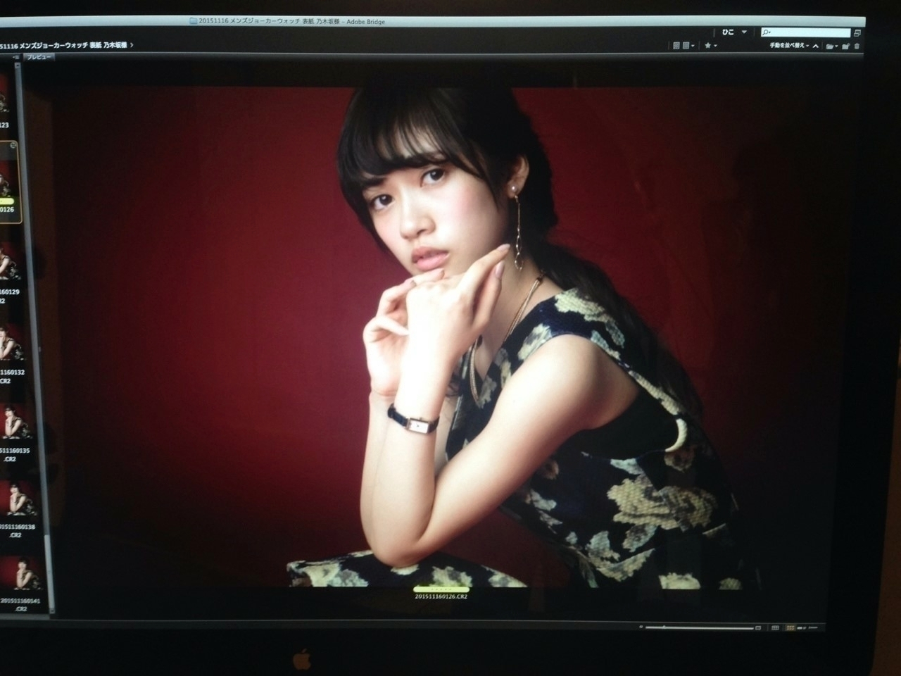

2016/0208Mon美味と意味
おはようございます
薬の錠剤が飲めないのが悩みで17歳にもなって
っと思ったら
この前フリスクを食べてみたら余りにも辛くて
粒を飲み込んでしまいました、、、
あれ、
私も玉飲めるんだなって！！！！！
成長したなと感じる瞬間がありました！！！！
ｰｰｰｰｰｰｰｰｰｰｰｰｰｰｰｰｰｰｰｰｰｰｰｰｰ
握手会in東京
朝早くからありがとうございます！
当日は雪の心配もありましたが都内は雨ですみました。
地方から来てくれた方は雪降ってたよーって話を聞いて
来てくださった皆さんへ
皆さんお足元の悪い中
本当にありがとうって心から思いました
改めて、ありがとう( . .)"
来てくれた人には
凄い伝わったと思うけど
私朝からテンション凄く
高かったですよね、、、( . .)"
なんかねﾆﾔﾆﾔ
楽しかったね♪
そんな握手会in東京の私服はこちらでした
今回は黒白で全部統一
1、2部
ごめんなさい
写メとる前にお着替えしちゃいました
ワンピースのお店の名前は
Ank Rougeさん✨のお洋服でした
3部
白黒
古着屋さんにて1900円くらいでお買い上げよき♪
レトロな感じが可愛くて
即決でした
あと、サイズ感もぴったりで運命的なワンピースです
靴も実は1部と2、3部微妙に違うお靴を履いてました
気づいてくれた方は
3人位だったかなぁ( . .)"
細かいところも変えてたりするので間違え探しみたいに探して下さい( . .)"
髪型とかお洋服変えた時に
褒められたり気付いてもらえるとすごく嬉しいです( . .)"
今回も楽しい時間を
ありがとうございました！


ｰｰｰｰｰｰｰｰｰｰｰｰｰｰｰｰｰｰｰｰｰｰｰｰｰ
コメント返しショートver
○ここで突然質問ですが、世界中に散らばった7つの使いかけリップを集めると何か願いが叶うのでしょうか？
→それ、ドラゴンボール、、、
願い事は叶わないかなどうなんでしょう
でも、落ちてましたよ寺田さんって人に返してくれたらこの人いい人だなって感謝します( . .)"
○握手会でまた質問する！笑
質問返しで蘭世ちゃんのこともっと知れたよ～！この企画良きです○
→ありがとう！
コメント返しとかって
長いからだら見しがちかもですが
よーくみたら細かな情報までいっぱい載ってるからね！
良き企画褒めてくれて
ありがとう( . .)"
○らんぜさま~！！
学生初投稿宜しくお願いします！！
いつも陰ながら応援してます！
大人への近道のらんぜめっちゃ可愛くて大好きです(^-^)/
毎日通学中はこのＰV見ながら電車に乗ってます！
これからも活動頑張ってねぇ！
ちなみにらんぜの好きな乃木坂のpvはなんですか？
→ありがとうございます
ありがとうございます
ありがとうございます！
すごく嬉しいです
学校頑張ってな！
好きなMVは
「制服のマネキン」です
初めて見た時に衝撃的でした
あのMVをみて
乃木坂に入りたいって思えたので好きです
オーディション前の曲なので参加はもちろんしてませんが
私にとって大切な作品です。
前回のブログ
沢山のコメントいつも
ありがとうございます！
初めてコメントしてくれた方やいつも書いてくださってる方
たくさんの方の思い、意見を身近に感じられる
コメント欄は
大切な場所です！
いつもコメントを読んで
一喜一憂しております！
これからも
楽しみに待ってます！
ご気軽にどうぞ(^ｰ^)
っという事で逆に私から質問です！
・好きな色は？
・趣味は？
くだらない質問かもですが
最近、色彩検定のアプリを暇な時間にボケーッとみてて
色んな色があるんだなーって改めて知って
そう言うのに興味があるから暇な時間も有効活用できてよきかなーっと
だから、皆さんの好きな色がきになりました！
そして、趣味について質問したのは
なんとなく！！！
ファンの皆さんのコメントとか読んでて
新たな世界が見れるんです
だから皆さんの趣味を聞いて私も新たな趣味を探す参考にしようかなと(^ｰ^)
よかったらお願い致します！
ｰｰｰｰｰｰｰｰｰｰｰｰｰｰｰｰｰｰｰｰｰｰｰｰｰ
何か書こうと思っていた事
忘れてしまいましたm(._.)m
あわあわわ
腕時計自分の去年の夏のツアーあたりから使ってる赤い腕時計ちと、ベルトがぼろぼろになってきました。
こまったさん

不意に過去のオフショット
また、不意に過去のオフショット、、、
載せます(^ｰ^)✨
さらばじゃ✨です
ｰｰｰｰｰｰｰｰｰｰｰｰｰｰｰｰｰｰｰｰｰｰｰｰｰ
あ、そう言えばですね
川村さんから
お洋服頂きました(^ｰ^)
凄く嬉しいです(^ｰ^)
しかも理由が
「らんぜぽいって思ったから」っと
その思ってくれたお気持ちだけでもとても嬉しいのに
本当にありがとうございます(^ｰ^)うれしいたけ
川村さんとは
お洋服とかの趣味合う気がするんですよね
よく、可愛いと思うものが一緒なのと
サイリウムカラーも
紅白カラーでお揃いなんです
握手会で着る予定です
皆さんに自慢したい。にや
14枚目握手会で着る予定です
またいつ着るか決めたら
ご連絡しますね✨
川村さん
本当にありがとうございます✨
ｰｰｰｰｰｰｰｰｰｰｰｰｰｰｰｰｰｰｰｰｰｰｰｰｰ
では、皆様
本当に
さらばじゃ(^ｰ^)
2016/02/08 20:48


コメント(906)
らんぜさんにいっつも全握等並んで、｢蘭世さん！いっつも応援してます！｣って言ってる中３男子です笑
本当にいっつも応援させてもらってます(∩´∀`∩)
それとめっちゃ尊敬してます～！
可愛いし、メンバーやファンにも優しいし！˖꒰ᵕ༚ᵕ⑅꒱
次、蘭世さんの4月17日の個握５枚取ってその日のために受験勉強頑張ってます( ´ ▽ ` )ﾉ
その時は｢こーたろー｣って名札付けていきますね～✩
覚えててくれると嬉しいです(><)
これからもずっと蘭世さんを尊敬して応援して行きたいと思ってます٩(ˊᗜˋ*)و
蘭世さん年下の俺ですが頑張ってください(*`･ω･)ゞ
ブログ更新ありがとう！
あっ、お疲れ！！
だーいすき♡
さらばじゃー笑笑
次は4月だけど宜しくね！
体調に気をつけて^ ^
もぉ、蘭世に会えることを楽しみに最近生きてる！
これからも頑張って！！
ブログありがとー
今度、全握行くねー
早く受験を終えて握手に行きたいです。。。
14枚目もいっぱい行くねっ！
来週の乃木中楽しみです♬
趣味は映画鑑賞
最近ハマってるアニメはありますか❓
あったら教えてください笑
自分もそうでしたよー！
蘭世の握手会行きたかったなー
だけど14枚目取れたから楽しみだなー
もうすぐで握手会だね！
俺はそれまでに音楽の発表会やら現代文のレポートやら大変だ！握手会楽しむ為にも今頑張らないとね！
あつき
可愛すぎかよー
「寺」のうちわをぶら下げて
握手に行ってる者です。
この間のモバメ大量に送ってくれたの
めっちゃ嬉しかったよ！
14thの個握行くからね！
好きな色はピンク色で、
趣味はダーツだよぉ。
俺の好きな色は紫！！！
乃木坂関係なく好き(^^)
趣味はね〜多すぎてわからないw
趣味は 乃木坂46 特撮 ドラゴンボール です。乃木坂以外の趣味は幼いです。16歳なんですけどね〜
趣味は 乃木坂46 特撮 ドラゴンボール です。乃木坂以外の趣味は幼いです。16歳なんですけどね〜
好きなドラマとかある？
かわいすぎる
趣味は、ダンス！乃木坂のダンスほぼ踊れるよ
14枚目の握手会、行くね！！たくさんお話しできるといいな
好きな色はパステル系のピンクがはまってるよう〜
でも赤はいつもすき！！！自然と惹かれる色だなあ、、、
趣味は寝ることとおたくすること！笑
らんぜちゃんのこともっと知りたいし仲良くなりたいし名前を呼んで迎えてもらえるのが夢なのでたくさん行きます⤴︎⤴︎名古屋早く来ないかな〜〜
薬頑張って(´▽｀*)
コメントする